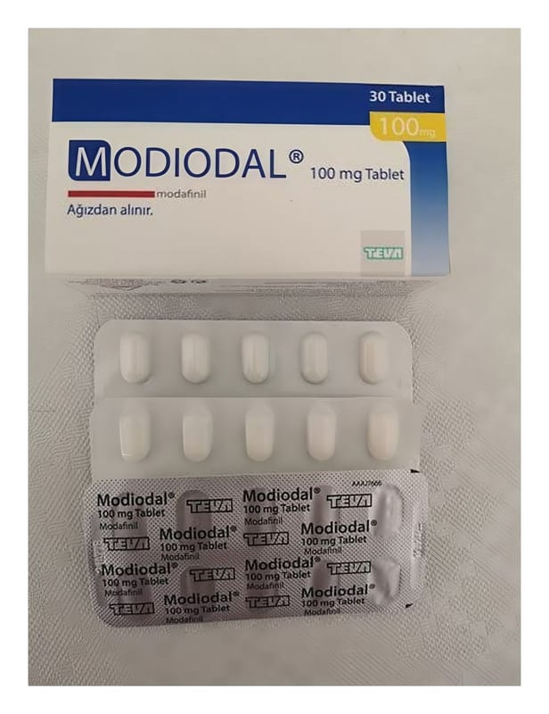

Modiodal 100 mg Tablet, 30 Adet

Ne için kullanılır
KT · Bölüm 1MODIODAL®ağız yolundan kullanılan veya alınan tablet formunda bir ilaçtır ve içermiş olduğu modafinil uyanıklık sağlayıcı bir ajan olarak tanımlanır. MODIODAL®,PVC (polivinilklorür)/PVDC (polivinildiklorür)/alüminyum blister ve ticari ambalajı içinde mevcuttur. Her kutu; beyaz ile beyazımsı renkte, 13 x 6 mm, kapsül şeklinde, bir yüzünde “100” baskısı bulunan tabletlerden 30 adet içerir. MODIODAL®, aşağıdaki tanısı konulmuş uyku bozukluklarından birinin yol açtığı aşırı uyku eğilimli yetişkin hastalarda uyanıklığı artırmak için kullanılır.
• Uyku hastalığı (narkolepsi); gündüz aşırı uykululuğa yol açan bir durumdur ve narkolepside uygun olmayan zamanlarda aniden uyuyakalma eğilimi vardır (uyku atakları). MODIODAL®narkolepsinizi iyileştirebilir ve ileride yaşayabileceğiniz uyku ataklarının olasılığını azaltabilir. Ancak, mevcut durumunuzun iyileşmesini sağlayacak ve doktorunuzun size önereceği başka yollar da olabilir. • Obstrüktif uyku apnesinde konservatif ve cerrahi girişim gibi birincil tedavilere rağmen devam eden uyku bozukluğu için MODIODAL®diğer medikal tedaviler ile birlikte kullanılır. MODIODAL®, CPAP (sürekli pozitif hava yolu basıncı) makinesinin ya da doktorunuzun reçete ettiği diğer tedavilerin yerini almaz. Doktorunuzun reçete ettiği şekilde bu tedavileri almaya devam etmeniz önemlidir. • Vardiyalı çalışmaya bağlı uyku bozukluğu